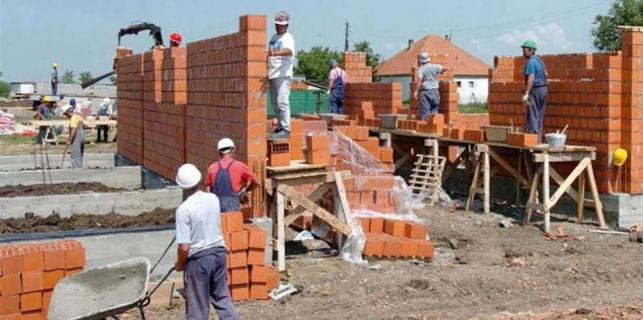

Općina Kršan na svom teritoriju ima 24 naselja, među njima najveći su Potpićan, Plomin Luka i Kršan, a proteže se na teritoriju od 127 četvornih kilometara te ima oko tri i pol tisuće stanovnika. Najpoznatija je po tome što se na njenom području nalazi termoelektrana Plomin te često o toj općini imamo prilike čitati, gledati i slušati, kada se spominje za neke toliko sporan Plomin C ili Plomin 3. To je općina u kojoj je u više navrata bilo politički turbulentno. Valdi Runko je šesti i najdugovječniji načelnik općine. Kao nezavisni je obnašao tu dužnost, u tri mandata, od 1993-95, zatim od 2001. do 2005,, a u trećem mandatu je na čelu općine od 2009. do danas. Od kako je prije tri godine ponovno, kao nezavisni kandidat preuzeo mjesto načelnika, općina dobiva političku sigurnost, što uvijek baš i nije bio slučaj.
Proračun od 20-ak milijuna kuna
Za njegova mandata, naravno uz pomoć općinskih službi, razumijevanju vijećnika, kako vladajućih tako i oporbenih, pokrenule su se mnoge stvari, u stanju realizacije su mnogi projekti, a neki poput novog, toliko očekivanog doma kulture, za koji mjesec čeka svečano otvorenje. Načelnik Runko objašnjava da je u svemu najbitnija priprema. Od ideje do realizacije, dug je put, treba vremena kako bi se ishodile sve potrebne dozvole, osigurala sredstva, mora se sve uklapati u prostorni planu, u vlasništvu planiranog zahvata Projekta, (državnom ili privatnom), administrativna tortura, svaka vam je ocjena i procjena gotovosti, upitna, idete optimizmom i angažmanom, i to je jedino siguran "adut", uspjeha, bez obzira na rizike koje nosi, i koji put na bezizglednost dovršetka projekta, jer odustajanja od realizacije, nema.

Općina ima znatan proračun, neki znaju reći da je možda i nerealan, no usprkos tome, realizira se uvijek na vrijeme dvadesetak milijuna kuna, a vladajući na čelu s načelnikom i većinom vijećnika trude se da bude razvojni i svakako socijalni. Runko nam govori, kako se od tih 20-ak milijuna kuna, u proračun RH uplaćuje više od pet milijuna, najviše kroz PDV-e, i ostale poreze po svim financijskim plaćanjima. S visokim, proračunom, zahtjevi rastu, te projekti za realizaciju dobivaju na težini i ozbiljnosti. Postaju pokretači, lokalnog poduzetništva, oblikuju življenje. Zahtjevno je izvršiti potpunu pripremu, i realizaciju takvih projekata, vrijeme je jedini faktor rizika, rijetko je javnog nezadovoljstva i kod oponenata. Runko nam kaže, kako je proračun izrazito socijalan, -dajemo maksimum da podignemo gospodarski općinu, ne zanemarujući i širi značaj društvene brige i društvene koristi toj zajednici, od najmlađih pa do onih, u poodmakloj dobi.
Simbioza općinske vlasti i HEP-a
Općina Kršan jedna je od rijetkih koja proračun sa skoro 80 posto proračunskih sredstva, vezuje za jednu stavku, to jest sredstava dobiva od Termoelektrane Plomin, te pitamo načelnika da li je to dobro, ili bi bilo bolje kad bi se proračun punio više iz raznih ostalih izvora.
To je danas tako, dobro je, jer se kroz ta sredstva smije dobro i na široko razvijati, socijalnu brigu, komunalno opremanje i gospodarski poticati, dajući šansu ulagačima, koliko god im to danas bilo složeno, u ustroju i funkcioniranju. Nastojimo, pripremljenom planskom dokumentacijom, zaraditi i "podignuti" proračun, omogućiti ulaganja, kako bi ovisnost o HEP-u, bila manja, s manjim rizicima za korisnike proračuna. Partnerski odnosi, nas i TE Plomin, su neposredni, razumljivi i uzajamni, ne sporadični, uklopljeni u zajedničke interese, barem je to do današnjeg dana evidentno, a da može i smije biti kvalitetnije, može. Naime u svakoj je stavci isplate, socijale, sporta, kulture, građenja, skoro 80 posto sredstava, po zakonu uplaćuje HEP, govori nam Runko.
Najbliži suradnici i koalicijski partneri, pa čak i neki oporbenjaci, znaju reći kako je načelnik Vladi Runko "strog", kako ima stav od kojeg ne odustajete, ne mijenja često mišljenje, što mu ističu kao pozitivnu osobinu. Sam za sebe, zna reći da nije strog, no priznaje kako je jako zahtijevan. Dugi niz godina u lokalnoj politici, i kao načelnika, naučilo ga da bude funkcionalan i dobar realizator. Sve godine učinile su i da jako dobro upozna, kako praktično tako i operativno, lokalnu upravu. Runko nam veli kako zna i trudi da sve znanje općinske uprave, bude iskorišteno na najbolji način, da svi daju svoj maksimum, te možda radi toga ponekad ispada da je "strog."
Za vrtić u Kršanu četiri milijuna kuna
U tijeku je natječaj za gradnju, dječjeg vrtića u Kršanu, vrijednosti više od četiri milijuna kuna. Tijekom proljeća, ugovara se i projekt priveza čamaca u Plomin Luci, investicija od 12 milijuna kuna. Prije ljeta se ugovara i šetnica lijevom obalom Plominskog zaljeva, duljine dva kilometra, u što će se utrošiti 2,5 milijuna kuna.
Ovih dana predstoji raspisivanje natječaja, te ugovaranje završetka obnove škole Šušnjevica, u kojoj se njeguje istrorumunjski jezik i kultura, što financijski i operativno sufinancira Istarska županija, uz posebni angažman dožupanice Viviane Benussi, te se očekuje financijska potpora za opremanje, od Republike Rumunjske. Na čekanju je i dodjela državnog zemljišta općini, radi izgradnje Gospodarske zone, najvažnijeg općinskog projekta. Za dva mjeseca počinje se s najavljenom gradnjom parkirališta u Plominu, te ako bude partnerskog odnosa s državom, radi rješavanja vlasništva nad zemljištem, započelo bi se s izgradnju prilazne ceste, za Načinoviće – Šimune – Jurase, za što su osigurana proračunska sredstva. Izvršena je prijava za projekt "Priprema i provedba integriranih razvojnih programa temeljenih na obnovi kulturne baštine", iz operativnog Programa Ministarstva regionalnog razvoja, za korištenje bespovratnih sredstava EU. Žurno se radi na projektu dovršetaka sportske dvorane u Potpićnu, zatim doma za umirovljenike, vodovoda Kamenjari-Kušari-Fonovići, te proširenje groblja Plomin. Nazire se kraj izrade osam Urbanističkih Planova, za područje zaštićenog obalnog pojasa, od Plomin Luke do Brestove.
Dom u Kršanu
O projektima koji su trenutno pred realizacijom i nekima u izradi spomenut će, skori završetak kulturnog doma Kršan. Na kojem predstoji uređenje okoliša, te interijera. Skoro su završeni radovi vodospreme Plomin II, kapaciteta 400 kubika, na proljeće se spajaju cjevovodi (tlačni i gravitacijski), na postojeći sustav.
Adriano Šćulac
March 28, 2016
© 2016 Glas Istre